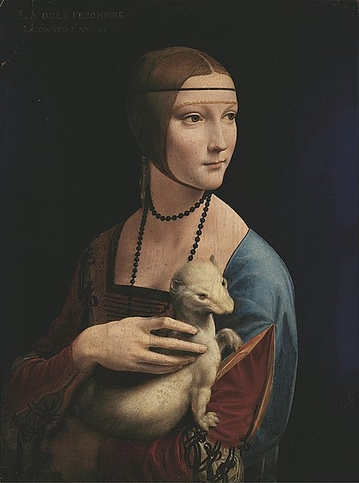
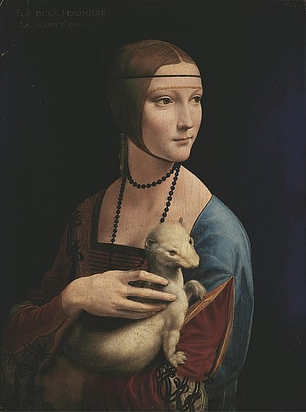
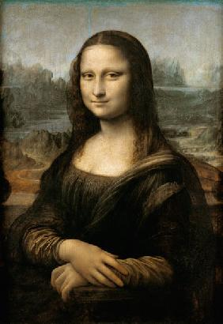
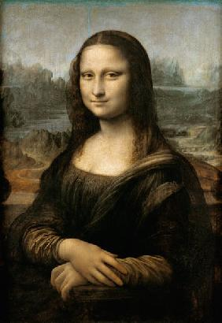

Leonardo Da Vinci
Leonardo da Vinci, conosciuto probabilmente come uno dei più grandi geni italiani, è nato il 15 aprile del 1452 ad Archiano di Vinci. Nel 1469 si è trasferito con il padre a Firenze, dove è diventato allievo del Verrocchio. Leonardo è cresciuto artisticamente in un ambiente dove si insegnava a concepire la figura umana, scolpita o dipinta, non immobile ma inserita nello spazio. Non si è limitato ad operare nel campo artistico ma ha spaziato in quasi tutti i campi dello scibile umano. Ha passato gli ultimi periodi della sua vita in Francia, dove ha portato alcuni quadri dipinti in Italia, tra cui la Gioconda. E' morto ad Amboise il 2 maggio del 1519.
<
 

 
